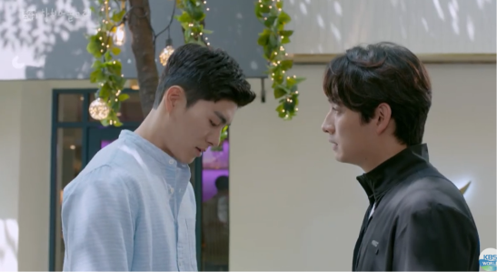
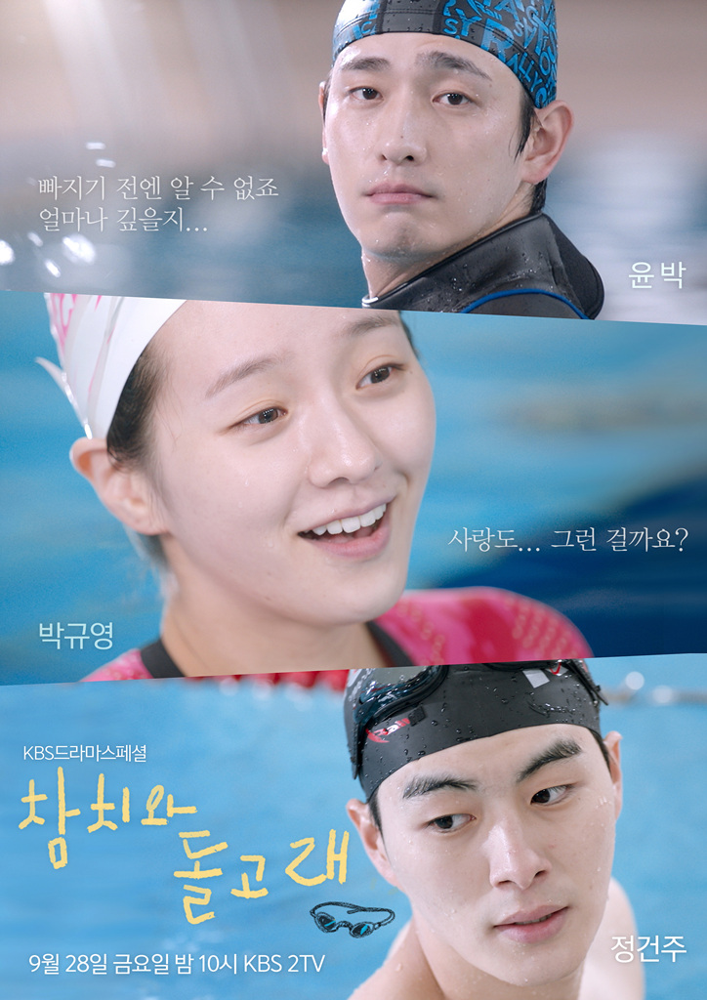

Lesson 4 · 한유라에게 보내는 편지
Rough draft
유라 씨에게,
유라 씨, 자기 생각을 더 분명하게 말하면 좋겠어요. 먼저 조우진 씨에게 결혼했는지 물어봤으면 좋았을 거예요. 그러면 싸우지 않았을 것 같아요. 또 우진 씨가 결혼했다는 것을 현호 씨도 알면 좋았을 거예요. 현호 씨에게도 자기 마음을 더 분명하게 말하면 좋겠어요.
저는 이런 경험이 없어요. 하지만 저는 자기 생각을 분명하게 말하는 것이 보통 가장 좋은 방법이라고 생각해요. 그래도 포기하지 않고 현호 씨에게 계속 물어본 것은 잘했어요. 방법은 조금 좋지 않았지만, 결국 잘돼서 다행이에요.
그리고 다음에는 의사 선생님이 말한 것처럼 술로 문제를 해결하지 마세요. 술은 몸에도 좋지 않고 마음에도 좋지 않아요. 제 친구들도 문제가 있을 때 술을 많이 마셔요. 하지만 술을 마셔도 문제는 그대로예요.
언제부터 현호 씨를 좋아하기 시작했어요? 처음에는 현호 씨를 좋아하지 않는 것 같았어요. 현호 씨가 우진 씨에게 관심을 보이기 시작한 후에 현호 씨를 좋아하게 됐어요?
현호 씨는 연애가 처음인데 괜찮아요? 걱정이 있어도 두 사람이 잘 지낼 수 있을 것 같아요.
연애할 때 무엇이 가장 중요해요? 저는 생각이 비슷한 것이 가장 중요해요. 두 번째는 성격이에요. 현호 씨의 어떤 점이 가장 좋아요? 두 사람이 오래오래 서로 사랑하면 좋겠어요!
크리스 드림
Revised writing
Add your revised writing here. Show how you improved your vocabulary, grammar, and ideas.

